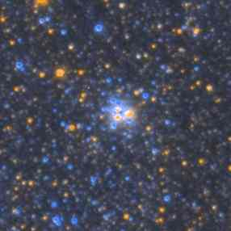
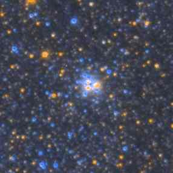

Participants and Co-authors
The first paper from the Andromeda Project can be found at #. It outlines the catalogues created using the site, and the methods used to do so. This work is only possible thanks to the people who came and took part in the project. They are listed below and this page is linked from that paper. Thank you for all your effort!
Contributing Volunteers:
Robert Simpson, Amit Kapadia, Cliff Johnson, Anil Seth, Andrew Poole, Arfon Smith, tony, Stuart Lynn, Kyle Willett, Andrew Christian, Roger Powell, Normand Houle, Juan Albornoz, Hernan Lopez, Dawn , Mark Redgwell, Connon Thomas, Joey Singer, A. Ko, Alessandro Bernardi, Brittany, Diego Rosal, Nesim, Gianni Di Noia, Emma S, Raymond Redder, Victor Jonathan Ospina Moreno, Kevin McAbee, Brian d'Eon, Yousuf, RiP Luke Daniel Taylor-Rooney, Nicklaus Traeden, Jaymee Graham, Yuchen Xing, Keith Elliott, Alan Wessman, Craig Brownell, Lurker, Christine Macmillan, David Whitby, Elisabeth Baeten, Lee, Wade Thames, Taigne Hammock, Laurentiu Florin, Orleo Marinaro, Klemen Cotar, Elizabeth Siegel, Magdalena Poniedzialek, Gustav Holmberg, zutopian, Kees Roovers, Malcolm Sargeant, Sudhamshu Hebbar, Jen Gupta, AlexandredOr, Jean Tate, nikhil gona, Drew Dalton, Hans Kuijpers, Mike Stewart, karthik Ramesh, Lanz Anthonee A. Lagman, Julia Wilkinson, AFA, Min Zaw Moe, Lynn Seguin, Klara Maria , Blazej, V, Lara, Jason T. Fusaro, Emmanuel CONSEIL, Philip Hartmann, nick psenicnik, Chris Andrikopoulos, Kai Roos, Kevin Z, Eduardo Balbinot, Stephen Richardson, Mick Ohrberg, jumble, Bob Stonebridge, Aurél Prósz, Jennifer Prado Ari, John Haynes, treeve currie, Krzysztof Helminiak, Deniss Kozlovs, Richard Seaby, Lee Furness, David Haapala, Matt Blake, Razvan Mihai Moldoveanu, Ace Lepage, Claes, taehee kim, Joe DePasquale, Hans van der Maarel, Daniel Rosenberg, Joseph Buehler, Michael Huster, Garrett Coakley, Stuart Keeler, schlefty, Blake C Antos, Petr Skala, Znobrdr, Andrew Stubbs, Diana Mancilla, Blubbi, Poepie, Francois Bussiere, Julian Onions, Jose-Maria Gomez-Gomez, Alex, David Porter, Ferenc Lovró, jmo, Amalia Donde, Nancy Weitz, Oliver Jones, Jean Crepeau, Ziya AKBAS, Pete Northrop, Brooke Simmons, Meg Schwamb, Johan Klein Entink, andrea.tesseri, C. Diethold, liamkirtley, Thomas Scholze, Graham MacKinnon, Joshua Francis Barker, Carol Campbell, Kocsis Tamás, Priit Roosimagi, taylan.dogan, Mike Hall, Karl Selg-Mann, Birgit Kohls, Daniel Pizza, James, Hang Wong, Tobias Etzold, sina, Sean Harrison, AleÅ¡ Leban, Laura-May Abron, Thomas Creque, Sherry Jamison Ling, Doug Nelson, carlo lavezzari, Michael Scheer, Joe Hollowed, christian de grandis, Steve Bonta, Eric Remy, Bazzani Umberto, Michael Cyz, Sylvain C, Brett Edwards, Alan, Ellie, Robert Purmer, Jarryd Heath, Sam Trifon, Alexander, Peg LeGendre, Loreno Heer, Carly Strass, Tom, Robert Erbarth, Chris Lintott, Marijke, Gavin Ward, philippe vepierre, Kevin, Michael Meakes, Genevi, Amanda Dostal, Sebastian Schmidt, Brad Schuler, Beverly McDaniel, Daniel Seimetz, Clay Johnson, Tom Morris, Fred van Esseveld, Dan, Oliver S., sharon knott, Michael Boschat, Michael Kerscher, Sonny, Ms. Blackburn, M.A. Boutilier, Shane Mitchell, Larry Soule, D Hatchett, Gino, Coral Milburn, Tordur S Joensen, imdra, Stefan Ziel, Rrain, Karl G. Siewert, Thomas J. Reding, Eric Polo, Richard Parsons, Matt, Dave McGlinchey, trevor allen faller, Charles M. Bartholomew, Colin G Craddock, Tyrone R. Tsan, Auroness, Greg Heyer, Gosia Jozwiak, Miranda Spanjaard , Marion Negus, Eugene, derek, Mariana, Jeroen van der Meer, John Kepers, peterhiep, Audrius Brid, Aravinda P, Janko Svetlik, LEW MCNEILL, Dan, Ken Gilbert, Judd Taylor, Tristram Brelstaff, Kathleen Swanton, Gabriel Ruscitti, gray flanagan, Kyle Harpster, The Cornish Cowboy, tsvi katz-hyman, Laura Gruhle, Tracy Murray, Paul Davis, Diana Seymour, Marco Theberge, Jorge Torres, A R Davis, brijesh, rstory, Matthew Bujold, Robert Tabb, Kjell Nilsen-Nygaard, Harm Kramer, Donald Warrack, Mark Kienzynski, Joris Janssen, Radek Kabaci?ski, Florian Duschl, Cheyenne Meyer, Nuriya, Brian Young, Cathy Ruedinger, Markus, Briana Harder, Zarko Veljkovic, Piotr Mardowski, Sarah Bauver, Alex Hall, coralee yale, Michael Breuer, Zac Thomas, Alan Eggleston, adrian, Dennise, John d'Adesky, Steve Malone, Rob Smith, claude, Shane, Peter Jennings, Jessica, Bruce Adams, Coenegrachts JP, Micheal Marks, Bas Geevers, Clara Mangili, Hannah Roesler, Steven Wade, David Shaw, roy wilhelm, Rick Sullivan, linus bergfeldt, mirko, Matthew R. Dempsky, Sebastien Freudenthal, Jeroen de Neef, Thomas Zolotor, Philipp Schulz, David Aldred, Todd M. Brewer, Andreas Sandberg, Stepan, Marinv, lawless, Bert Willard, Pat O-Shea, Kacper, Gonzalo J. Pujana, pixelfixx, Donna Gilberstad, David1938, HiC, emma clifford, Nanna Jordt, Darko L, eric jolley, Nazar M., William G. Miller, Bartosz Petko, Allen Mole, Simon Redhead, Otto Hanyecz, Barbara E. Barnett, Vladimir Bezugly, henry, Kirk Steffensen, Nilson Bazana, cbass.cpt, Kate Wilson, Fredrik Bergstrand, David Wilson, Cameron Sewell, Kim Board, nabializm, Richard Symonds, nora, Simon Kipnis, c00ky, H. James Smith III, Ivan Terentev, Kevin Agustin, Hagen Tannberg, George Nelson, GADEA Jean-Maurice, Alla, Mike Matessa, Nelson, david hopcroft, Anthony Holdener, Paolo Tozzi, Dulio Samayoa, Samuli Vuorinen, Zbigniew Chetnik, Daniel Hartenthaler, Alex Eve, Emili Cid, Jan-Petter Hammersland, Mallard, Ivan Banov, J, J.G.Mas, Palindrom, Nick Lister, Aleksander Parkitny, Josh Gagner, Duane Dedrickson, Artie Hopkins, danie p., Ben, Samik Saha, jacob, Dominick Dennis, zverolen, Pat Triplett, Juli, Robbie Bozeman, Taco Rubio, Nancy Eaton, Catherine Boivin, Graham Mitchell, Alejandro Galeazzi, Khanh, bejcej, James Wilcox, Stratos Karadimitriou, Angela Huddleston, Nabil, Martha Boyer, Fergie, Amir, Renato, Nowosad, Matthew Peets, Aline Dinkelaker, Ricardo Cardoso Reis, Matt, Programko, Michael, Jeremy Glazman, Monica, mariohyeah, Aidan Williams, Saint-Pierre Florian, AndyB, dermot, Don Githens, Damien, Satyasri Kar, Jan Kofod Larsen, Shandee Votaw, Lisa Johnson, DAN BAGLIONE, Remus Negrota, Luka, Alexander Skvortsov, louise burnyeat, Pete Jones, Brendan Woods, Neville Taylor, Gabrielle Biordi, Paul counter, Sara Stewart, Vinicius Copetti, david, John T., Brian Prenderville, Holger Floettmann, Ruth, Marc van Gemert, Robin Stratford, Kacper, Sean, Maciej Bilicki, ursanegra, Naisse, Magne Mæhre, Bic Wood, Thomas Jones, Andrew Smith, darwin, Colin Sevareid, Werner Kvalem Vesteraas, Silvana, Peter Dzwig, Desmond Grossmann, Briana Dickey, ann-marie williams, Clair Wallis, Bob Blanding, Mikhail, Faust, Jakub Bartas, Koen Visser, David G. Tabor, Jr., Martin Gygax, Michelle, Elspeth Mitchell, Zach Timmons, Amy Kaczmarowski, Peter Ramage, geert verhoeven, Cieran Hughes, David M Williams, Scott Ransom, Edmund Perozzi, Carla Pagnani, Zachary Stevenson, Michael, lynda3121, David lane, DOUGLAS J. EVERT, Kristian U. S, Dylan J, Matthias Gaebel, Mike Greengrow, Eric R. Pearsall, Beth Manning, thiago keizo, Iane Mattos, Mark Moffatt, Paul Carter, UldÄ— SirtautaitÄ—, Loki, Jesse Wright, Spencer V Taylor, matradix, Dean Howard, K. Flippo, James J. Marshall, Lee Reiswig, Jr., Matthew Gerrits, Martin Kolling, Stephan Hartmann, Ingrid Ludeke, hadi, claire trease, Darrell B, Janusz, Boisei0, Nicolò, Kelly Yilmaz, Rachel Schmitz, Marielena, Fabiano Epp Hort, Dave Pugh, David Cortesi, Stefan, Rachida. , Tatum, Sean Lyon, Dmitry, Mark Lines, Keith Geary, Katharina Doll, Tomek Szpartaluk, Jayne Waters, M McGregor, Nadine Ihle, Colin Hills, lily, Franz-Josef Stiens, Aleksey Shcherbachev, Johan Kärnfelt, Stephen Bechdolt, Philippe MICHEL, Brittany, matthew, Ed Gibson, Ed, Jake Burkart, N. Ascough, John Hopkins, mitch, M G Whitham, Lee Labuschagne, Aaron Hancock, Luke, james ostler, Oliver Jennrich, Dean Dixon, Mariusz Chlebowski, Tom Leisse, Dave, Al Lamperti, Athena Loi, paul, Jeffrey Zane Hansen, janet scott, Kelly, Stefan Taube, Maksym Aryefyev, Evan Skillman, Brent, Jared Hiltner, Brian Chamberlain, Barry LaFond, gustaw, Anna, Bastian Herentrey, William Wells, Jeremy A. Hansen, sharina, Andrew Sellek, Cesare Bezzi, Zachery Jaysen Scott Roberson, darkol108, Brett Orion Suydam, jen, Debra Meloy Elmegreen, Meehyun Jang, Emily Vertosick, Chris Snyder, Jason, Catherine Leecy, Stephen Halston, Piotr Ficner, Jim, André Engels, Richard J. Terrill, Eric, Matt Whiting, Robert Leduc, RJ, tony, Josias, L, Tim Zwicky, Diego, Steven Brisbey, danrod963, Michael Haberer, Ludwig, klaudia herbst, Jonathan Quist, sammy rahman, Anne Losch, Pier, tastiger, Stefan Karge, william hutchinson, Michael Josephs, William C Weiler, Jack, Andrew Gilmour, Kyle Moore, Dan, Thorbjoern, Thomas, Ian Thompson , Antero Ahola, Matteo, Jeremy Jackson, Derek Gibbs, Michi Kovacs, Pete, david briggs, Gene Cumberland, Raymond Jones, Don Hebert, Bruno Poterie, Scott Dombroski, Fernando Romano, J. L. Rydeen, A Buckner, Dennis R. Patten Sr., camera, Jonatandb, Alexander Cameron-Smith, Lonnie R Mosley, aviv, Levi De Martinez, dave jensen, Gilmore Davidson, Stan, Christina, Elendrius, Jessica Hronchek, Elorian, Andrew Swan, Palacios, Salvatore Napoli, DDS, MD, Casey Christopher, W.E.B., D. W. Szomm, David Hynes, Tony Hallam, Patrick F. Poitras, Kristen, Aidan, Frederico, Peter Zakor Ziv, amanda bauer, Rebecca Hussain, Brian Von Whisenant, janine cockerham, Martin W Schwartz, Chris Marten, Jacob Bogle, Norma Jo Anderson, Morgan, OldKingSol, Jeffery Snyder, Paul Walker, Benjamin Hunt, Dutch, Sebastian Zieli?ski, Patricia Eddy, Paul Sheldon, Chase, Leslie Martel, JOSE CARLOS REBEQUE, Carol Kara, William Gibson, Yi-Hsiang Hsu, Hj Muhd Firdaus, jlczuk, SuperkOkOoO, Manos, Trisha Bulow, frank navarro, Terry Drake, Cortney Morris, Melanie Jones, Samantha , logan, Anne, Mariusz Bochenski, Alice Duncan, Pavl, Gianinna Dalle Mese, col yandle, Clinton Kjar, Lauren Zamora, Sandra , Anna Beard, Raxyn Explodinator, Rasha, Garrett Evans, Matteo Cerruti, Steve, Brodie, Adam, Paul Duncan, Jason, Eric Serafino, Connor S. H., David C Prince, Mike Fri, Mary Ellen King, Jean O'Shea, Kevin, Thomas Hoff, Peter Howe, Sean Anderson, D Winger, Alison K Monahan, John Stinnett, Ann N Rudy, Christopher, Kevin K, Tess, D.Karthikeyan, Mark Pierce, Craig Peck, sean, Leigh Kinrade, Anthony Brokaw, shrodi, benjamin, Paul, Deirdre, rita amirahmadi, Brendan Roehm, Lukasz Machowski, Danny Cox, Tom Teters, Kevin M Gassen, raeeunlee, Jayson Messick, Anthony Rice, Jinx Orton, Jose L Vazquez-Bello, Walt Bliss, Sonya Burgess, Jack, vanessa pointejour, Kathy Lopez, Marlene Schulz, Wendell Small, Keith R. Marley, Brandi , Kathryn, Samantha Fuss, Ryan S. Chidester, UtahJulie, Alex C. Balla, L. Van Warren, Dr. Sejpka, Johann, Emery Cox IV, Tyger Ant, Geneva, Tod Young, Mark Sansbury, Heather Bassett, R Yee, Dawn, Julie Harkin, Vladimir Vrbetic, Mike Worsley, jonathan, evilhayama, Paul, adam lamb, Bernhard Liedtke, Torsten Fuss, dustin, John Rovnak, Oleg Nizhnik, Sundee Proctor, Paul Lumpkin, John Bragg, Ben Byrne, Martin D Smith, Graham Dungworth, Anouk Roberts, Detlef Meinicke, Reiner Guse, Mariel Holm, Andrej Likavec, Steff Elgaard Wiklund, Leo Girardi, Michiel Carpentier, Reece, Michael Russell, Simon Kidner, Al MacLeod, damijan, CAUQUIL, Carol Stabler, Michael Moffa, Karen Masters, Tareq, Adrian Daniel Pascalin, wesley, The Ralphs, Tiago Augusto de Andrade, meyerluk, Catrina Stephens, Chris Short, Anik Wellhausen, Heikki Paakkanen, Fiona Robertson, Allen, de La Taille, Tapio, Georg Happy, Steven Bamford, dennis william gaylor, Justina Boulos, Christopher Rosslowe, G Shearwater, Anders Nygaard, Phil Shaffer, steve sutton, Dirk van den Herik, Wikus Zandberg, Tim, Pierluca, Alan Teale, Heather Cameron, Davide Bianchi, Chantal Perez, Mike Barrett, Liana Pavlovica, michael justice, Alec J. Cook, Les, Andy, Arnulfo Madera, Vincent Hause, Tony Sault, Bryan Keibel, Guido Bianchini, Alexander Vyssokii, Zolt, Marjuzium, Boosianer, Kyle Christy, John Carruthers, MTo, Cal James, Kyle , Pat F, Nikos Papadopoulos, Amanda J.Maughan, Oliver Mackie, frank mcnally, Francesco Piroddu, Gary Kuo, Brian Free, frank bilotta, Rebecca Clinton, John, Vincent DECKER, mona, Taylor Bastyr, Olivia Gordon, Deborah Rockel, Joe, Natalie, Daniel Nutt, m stew, Robert Happ, lucy, Eric Crnkovich, Marian, Laszlo Gyarmati, sam, Fred Kaullen, Kristen Wear, Eva, edith tunstall, steven hobbs, Brett, Robert Olejarski, brieann, Josh Cohen, Rick Gakell, Florian Mengedoht, Alexander Hernandez, Richard Smit, Christian Olivier, brenda tabata, Balibaa Jaehun, Leegwater, Pedro Carvalho, Don Dedrick, KimboSlice, Rowan Watson, Caroline, Emily Sheehy, Atanu Dey, Markku Autio, Erin Puckette, FlyingGeode, Mallory Hasty, Jovanov Milo, Rhianna, Jason Titus, Ben Wilson, Zach, Alicia, Timothy Wilson, Rob Treby, Merri Heineman, Jonathan May, Mark Finnegan, Eduardo, Helen Percival, Henry Hoyle, Charlie, MOHAMMED, Eric Shafto, Rosemary Brown, Anthony, Val Martin, Peter Nielsen, Tamara Sanders, Andrew Punton, The Doctor, Jacky Reynolds, deyshaun, Philipp Ostaschewski, Megan, Hanna, John Baird, Denitsa Genevska, John Bullock, Brian Engler, Sean Mordhorst, Katrina Wolfe, Christian Manteuffel, Thomas Jalabert, Ferris, Tim Jones, Jay Frail, Max, Nik Ignjatovic, Dane, Jacques de Hooge, Ray, Ross Conner, Alex, Aaron Hobbs, Bonnie Chavez, Michael, Sam DeGiacomo, Daniel , Alex Voltz, Marek Biernacinski, jeanine pettrone, Aidan Spangler, Marc Canale, Adam Fuller, Cody Cox, Eeva Koskenlinna, Alexander Neumer, Bruce Plaice-Leary, Bryana N., Frank Balzer, Rob Mellor, Megan, Fausto, Daniel, blackrob66, Dave Bower, Dr Andrew Johnson, Pete Giovagnoli, Piotr Ingling, Fiona Wynn, Thomas Kristiansen, Goldkins, Christopher S Dreyer, Randy Jones, Elizabeth Johnsen, Robert, Tom Brewster, Justin Edward Bartlett, Sue Cooles, neil laker, Francesca, Katie, DeCastroPardo, Ben Davis, JoelHof, Daniel McCurdy, jayfish, Brian, Simon Campbll, Hedley Carr, Kerem KAT, Anthony Heath, Phillip T. Moss, Henrik Wannheden, Erin Hendrix, Stefan Granat, Mikko Larjo, Dan Masters, Ellyne Kinney, Peter Koppany, Jim Rieder, Dale Hindle, Francis Oliveira Linhares, Beth Peterson, Beth Nichols, Max Elsinger, Florian Jogwick, Amy Winters, Stephen & Theodore Sample, Robert L Zook II, Alex Van Boxel, James Dyer, Szymon Molinski, Tavi Anne Greiner, Steve Kemp, Travis Meyerhoff, Eric W. Noah, Martin, John Bowman, Max Taylor, Anna Charny, Brad Whitmore, Kay Drangmeister, Jill Corr, San, Geoff Roynon, Julie Attwell, Nico Cappelluti, Daniel Werner, Daniel Rodener, Andr, David Warrington, Walter Combee, Felicitas Meissner, Daniel Jimenez, Terry Martin, Patrick Eldridge, André Schnell, Thomas Sch, Otto Siegl, Mayra, Dr. Ing. Frank Breiter, Mike Harmer, Orestis Madianos, Alissa, Brittney Ryan, Ryan N, Totem, liam, Hal Boyd, Jeroen B. van der Steen, Ronnin Yee, Scott Hardy, sky , S, Pat, J. Keeley, RobinP, marco, Spencer Tuggle, Klaus Tenter, Barry Stevens, Kyle Watson, Jeff Isaksen, Julian Webersinn, DDailey, Jan-chan, Mark Day, Rob Waters, Austin, Moriah Warner, Lisa Timmerman, StarFortress, Emily Mentrek, Karen Ennis, Larry Deck, Stephen Finney, Sebastian Forst, Katie , Cheryl Campbell, Rémi, Jacqueline Ryder, Hannah Freedman, Corne Donkersloot, Leighton, katie emberley, dave battson, Julie Lee, James Thomas, Caesar Ean Escleto, Mauro Bellini, Ruth Eller, AXEL, Jenea Hayes, Rick Cordes, Pier-Gilles Roy, Katherine King, Mike Nault, Anita Agbedor, Gregory Alan Noll, Evgeni Perinskiy, Rod Lopez-Fabrega, Kevin Shelline, Tyler Reynolds, Bob Eramia, Markus, Lee Jordan, Christian Froeschlin, Ted, Lacy Garner, Nick Termini, Korinne McDonnell, Dean Halpin, john, Joe Deschaine, Paige, Joe Linsenmeyer, Ryan Nakamoto, john gast, Michael Brito, Tyler Kissinger, jared mccutcheon, Phillip Patriakeas, Sandy Harris, Fin FitzPatrick, John Merritt, walter lewis, Matt Vest, Jessica Lopez, Diane Rose, Anthony Dewar, Stephanie, joanne lyons, Phillip M. Zentz, Shella Rittenberry, Scott, adeline lutts, Lily Lau Wan Wah, Daniel, Nicholas C. Messerlian, Jeremy Sonvico, Mark S. Friedman, Robert Casey, Julia Headlee, Rob McKinnie, Magdalena Plewinska, Aaron Winfree, Justin Hawley March, Ian Barras, Kerry Fowler, Robert L. Armstrong, Pafnooty, gerry hine, H Anderson, vivek keshore, Anton, Tim Luce, suresh dixit, chris huston, John Hardman, Steve Fulir, Kevin Kodama, Marcel Veillette, Blair Donaldson, Dallas, Shenandoah, Angela Butterworth, Matt Davis, Marley, Ben, Bengt de Paulis, Brendan Moran, Paul, Espen Arnesen, Zulfe Eyles, John Hilton, Jared Dziedzic, Jivan Kohinoor, Clintonio, Peter Horan, Cahya Ong, Ann-Katze, Arduin, Tim, paolo, Jason O'Connell, eduard, Caro, V Brewer, Mark Bryant, Robert Maher, Natasya, Angelika Promes-Scholz, Antti Saloranta, Chris Molloy, Fabian Runkel, Jim Gage, Tomek Stobierski, Yuta Koyama, Kristina Klug, olga faklari, D.Keene, visalken, MikeT, jason stonehouse, Adam, Geraldo J, James Nethercott, Daan Kogelmans, Nathan Krause, Judith Selig, Sagar Singh, LIHU KOLTON, Latif Gardez, Aleksandra Petrova, Mike Rosseel, Susann Schaller, SAHIL, Terry Murray, Sue McNab, cheech, Alex, Paul, Clay Ashby, Robert T. Connal, Tom Kristensen, Gabriel Dobersch, ErroneousBee, devante jordan, jakob juel s, Jackie Soenneker, Jim Ruebush, maarten, Caetano Julio Neto, Jimbo, Leonard James Carter IV, Ryan Weed, Jeff Price, Gerry Fahy, Rachel Adams, carrianne tough, sam, Mirka Allerding, Matheus Pedroso, Tomasz, Minke J. Sijens, Dieter Ziegner, jllattari, Andrew Hummel-Schluger, Andy Moore, Juniper Ross, Michel, Christian Semmens, Staffan Haglund, David Hart, Mali, Matthew Herbert, Brent Sandvold, Arthur Guelzow, Ronald van Dijk, Jennifer Churchill, Gilles, Katherine Ward, Jasper, Cristiane, Petr Vinkl, Craig Coates, Steve Myers, Bob silsby, lpspieler, Alex Raffini, Michael, Kate Reid, Lee J Haywood, Buzbox, Ewa Tyc-Karpinska, Michael Wheatley, Duane Cavenagh, Bill Turnill, S.Triefenbach, Morgan Pare, Piotr Sniegowski, Ivor Huston, mhardgrave, Govin Pandian, Till, Sariah Cassidy, Julien H., Andres, Charlez Zak Santos, M. Jongens, Arkadiusz Nag, Ivo Ordonha Cyrillo, Krzysztof, Chris Robinson, Larry R. West, Kosmos, Emanuela Batog, Daniel Pearce, Cory S, Jane K, Tory Green, Clinton Hughes, John D. Crawford III, Leandro Medina, Patrick, Edward Sanderson, Stefan Budansew, DFish, Tami Sheiffer, Andy Woudstra, Nicolas, Chloe, Ana Claudia, jim gleitsmann, Beth, Richard Hunt, Bishop Edwards Roberts, kyle summers, scott magee, Tony Bowe, ndbilladeau, Jennifer Hicks, Suzie Michaels, Stephanie Modesto Pinheiro Cavalcante, Gwen Christensen, Aradia Farmer, JennC, Jarl Turcotte, Jacob Pember, Robert H. Croyle, natascha, Dr A N R Law, Phillip Potter, M. Campbell, Robert Puteanu, Mike Kidulich, David Mari, Ferdinand, Mykolas, Massimo Mezzoprete, ana.lalovic, Ben W, Rick Hall, martijn, Christine Le, R. van Giesen, Bart Lutin-Smet, Arda , Tomasz, adrian davis, George Stodulski, Stacey Andrew, Gary M. Guinn, Alexei Kanikevich, Marianne Eik, Tomas Fell, Zockerfreak112, Vibhav, Brigitte von Arx, Serr500, Howard F. Dratch, Maria Helena Rodrigues, Jappie Elzinga, David Counsell, Misha Kon, The Love Hound, general john, Gilda Walls, John INgham, martymacs, graham moore, Gloria Jodar, Ryan J. F., nat, athenaswisdom, Manuela Pester, Michelle Roman, RachelBrown, David K. Moser, Vladimir Shuvaev, caruso, Michael Willems, Steve Evans, R. Dean Draper, Raj, Robert Williams, Bill Lawrence, RSEA, Alan, J.A. Morales, Josh Gerry, Vincent Charles Wayne, Derek Neil, Ryan Hofmann, Ryan Ormrod, Julian Skonberg, Les Borean, Donna Broyles, StereoSpace, Daniel Mildenhall, Kiran Viswamurthy, Michel Alexander, Eddie Christie, Moreau, Matthew Sottile, wea5, James Killgo, Amanda, Saeed S, Douglas Slauson, John, Gerardo Uriz, Adam Williams, Ahmad Al-Oufi, Tabatha Loving-Yager, Rachel Oei, Jose Salgado, Aaron T, Sebastien Lavergne, Lori Porter, Luke, maripuchi, William Kreutzmann, Francesca nx01, asmy, Leizazure, Tadeas Cernohous, Piotr Matuszak, Brian Houk, Vanessa Curman, Luiaard, Jen Starck, Timo Kaipainen, Stoiko, Mike Roundy, Oliver Hotz, Pawel Jackowski, Aaryn Goodwin, Henryk Krawczyk, Marc Rosson, Cotereau fred, Barry Billings, VagabondAero, June Bolt, Jan P., Sue, Lukas Hackl, Cindy Fairhurst, Nahum Chazarra, Andrew R Thompson, John Hillan, Zan Light, G.W.J. de Kok, Michal, Isabelle, Scott Young, Hefin Davies, Dimetrex, Dino Croes, Robert McLaughlan, Shaun Ladd, Klaus Nuber, Patricia L. Gray, Gottfried Brickler, Facundo, Avi Varma, Glenn, o.penz, Robyn Cross, ARK Clayton, Saroglou Nikolaos, Michael Pastorett, Thomas Jackson, Florian, P.J.C., Rachel Oliver, Ellis Parker, David Tuangswangsd, Carolyn Schlesinger, Charles Trott, John M Ryerson, Shanita Andrews, Dan Holtman, Aneet, Rick VanWagenen, deanna edadiz, Ikon Rahu, you're welcome, James Jordan, Zbigniew Siciarz, Bart Durlinger, Matthias, Beth Morris, Edwin Tol, Peter Greutmann, David Bright, Michael P Erato, Daniel, Tommy, Meadhbh Hamrick, Phil Cross, Marjorie Cheesman, cristiano, Jason Smolinski, Jim Robinson, George, Marco Iozzi, Kevin Jorgensen, Indre, Robert w Motts, John Spahr, Susan Webb, Dave Martin, Michael Parrish, JamesJ, James S. Thomas, Michael Totzke, Steve Horvath, Tiffany Israel, Dr. Timothy Haupt, Sherie Beth LaPrade, Allison Black, Jose Santiago, pennifither, Devaute, brumac, Donna V. Wakefield, dan, Carla Spahos, Adrian Tristram, Daryl J W, Lauren Kahre, Geoffrey Smith, Evgeniy Mityaev, Rachel, Apoorva, Becca Tucker, Darren, Gaston Picard, Hezi, Vanessa Arnold, Jeroen van Dorp, Siandef, Regina, charles, Erik Luckjohn, Joe, Samuel J. Hartman, Aleksei, pand, Abram Morphew, aleksandar, Marc Howerton, Herwart Kiram, Vicky, Justin Junge, robert franklin, LovingHisGlory, andrew, Mike Cunningham, Eric Marlatt, Nancy Godber, Raydon Sjobeck, kudurru, Michael Sanford, Dave Steppat, Steve H., Nico Waldt, Ro Cochran, Beau Hodges, Rob Stemple, Justin Kramme, Brian Aboozia, Eric Doll, Blake Getson, John Ralph, Amanda Peters, Mike Solontoi, Karl Swetnika, Torsten Mauz, Robert Barnard JR, Krista, Dennis Hayes, Michael Roberts, const, alan, David Varing, Minden Frances, Dmitry, John Gomes, Martin Joustra, Corey Brown, Janis Schoenfeld, Donald McKay, Terry DeGan, Michael Rector, Kenny Alperstein, Ryan Pope, Michael Teige, Tracey M .Habel, christy allen, Karo85, jo, Dima, Michael Sampley, Amanda Steuer, Linda French, Tudor, Jane, Kenneth Kowalski, Mark Hassall, Tommy Johansson, Michelle, Brooke Ferguson, jessica erickson, jshantha, Jason Lang, dare mick, Justin Graves, Natasha, Tom Melone, tyler, Cesar, Ted Davis, Jeff, PaulE, Christian, Michael Schroeder, Beth Maschmeier, Aaron, melissa m , Michael, Pavel, Patricia Kline, Eric Barrett, Imran Farooqui, boris podchezertsev, Bill Richardson, tussock, Prithvi Shiv, Daniel Lindsay, Lance Gough, Yaroslav, thomas f., Victoria Law, Alexey, Sergey, ARUN PRASAD S, Daniel, Rena Nazirova, Billy Andr, Alan Mellerick, Shannon Kindilien, mash, Martin, Edward Holt, Gabriel Olsen, Eoin Lennon, Jeroen Versteeg, David Hoekman, Amber Hornsby, Stephen Bernard, Sarah Ragan, Dexbana, Guilherme de Toledo Figueiredo, Ross Bailey, Mike Schacht, John Brown, Gary Coy, Samuel Ducca, KJP, david, sidj, Ilya Khaylov, Randy, Stefano Gatti, Benjamin McIntosh, Joshua Frechem, Alexander Rudalev, Volodia Georgiev, Steve Yazicioglu, River Bissonnette, Jeremy Brainard, francesco, Marcio Poitevin, Dr. Urbahn, Ivan, David Antonio Arribasplata Rojas, Jeisson Gomez Rodriguez, Adrian Cejas, L, Kristoff Lutchman, larry739, Alex, Fred Randall, Vladimir, PaulHutchinson, Joseph Jackson, acore, Jeremy, Geoff Holt, Lucas Bover, Adam, Nicola, Roman Di, Daniel Homes, MV, cisco, Tod R. Lauer, Mika Laamanen, dave mcbride, Jorick Linterman, Christine Walker, David S. Filippi, MD, Andreas Tors, Alexander McLin, Henri Thyrrestrup, thomas bruno, Phil, Jordan Hilton, Jarek Miszczak, Kaiti Trimble, james1950dstevenson, destouet, Nick Tallman, Laura, Kayleigh Ayn Bohemier, Daniel de Metz Lydon, Dave, FranceAlgorab, Peter Ayre, Luis Arturo Noria Trejo, James Berg, Aaron, Guillermo Abramson, , Harold Bakker, Richard Philbin, Holly Davis, Sydney Hollins, Daniel Rollison, David Barker, Sean Smith, Cristina Dume, Dan Fox, Rafal Reszelewski, Marie Hazzard, Aleksandr, James Dubben, Shri, Christopher Usher, Alejandro, Ernest Company Vallet, Peter, Larah Almeida, Jeff Grundy, Mark Sweeney, David Stelter, Tomas Hult, Dan Mauldin, Taryn, michael hadley, Adam Horan, scott mcleod jr, Lisa Gottlieb, Kari Alder, ruth, Pat, Daniel R. Pratt, Charity, Gregor Shapiro, Cat Schnelle, Mike Szotek, daniel dickinson, Adam Cheek, Rich Friedrich, Alex Popescu, nick, Michiharu Hyogo, Milio Vente Pormi, Keith Hearn, latu, ra du, Chris Cannon, Todd Strand, Ivan, Wal, Alexey, Suzanne LeBlanc, Michelle Aiken Al Saadi, Trofimova Ekaterina, Joseph Moran, Michael Johnson, Pavel Srna, 67DominoBaron, Peter Grandia, Magdalena, Parnia, VojtÄ›ch Oram, Roman Tkachenko, Paul, Angela Fox, Sotiris Giannaropoulos, Brendan Desmond, J.L.T. Oomen, Gabrielle, tsmalek, Rhys Poulton, Ken Krebs, Mr.Hawk, zac foil, Bruce Brolsma, Kathie , Gvan, David C Howard, Kyle Yanoff, Bryan, Mike Copp, Suso, Gloria Rivera, Joe Davenport, Mattias Furskog, Eric Huber, ssstokrotkaaa, Scott Moore, Maksim Ljovin, David Brown, Sharon Britton, Monica Butcher, Brendan, natalie, Zeb Németh, Ben Stracka, Lewis McCrary, Jacob, rattykins, anita springer, Geri Chowning, Richard Ferstenou, andres eloy martinez rojas, Sam Tello, Suzy Bracken, sean mc gurk, Martin Fox, Mike Henry, Tomasz, William Brown, Jordan Belles, wgoltz, Andy, Tanya Urrutia, David Law, Mily Riley, Pasquale De Santis, Rafael, blancho, Ethan Williams, jacob, Andy Parsley, Shawn Cruze, Aaron, tonya, Steve Adams, Faith, Anna Farnsworth, Aaron Fletcher, Evangelia, Lexie Lu, John, Justin J McCollum, Philip Le Riche, Reid McCamish, Juha Lang, Canaan, Brad Smithson, Knud Jahnke, Larry, Madeleine, Wojtek Isanski, Mary, Nestor Arellano Pulido, David Maetschke, Matt S, Victor Mota, Xakarus Alldredge, Alexey, Sandra Loley, Mattias von Schantz, Odilon Simoes Correa, Maikel De Clercq, Ver, Carlos Manta Oliveira, Jason Mcclain, Karol, Justin Hamilton, Silvanio Bezerra de Oliveira, BackupElk, richard, Mathias Hofer, Tyler Ellington, Jonathan Turner, Rafal, Jos Y.R. de Bruin, Trent, Maria Clara Machry, aleh biheza, Keneil Buchanan, Chris A Skilbeck, Avery keen, caroline wood, kaelie, David Dowhos, Tan Xuan You, Vivek, Kali Ask, todd, Marc Aguirre, Kirk Pearson, Aza, Andrei Fierbinteanu, Jack Williams, Jim, oli, Mariana, Bruno Domingues, Lozza W, martin noble, Martin Roth, Daniel Leadbeater, Jeromy Mills, John Phillip, Karen Sof, Richard Watson, Matt, Ashley Harrold, Ankita, Jay Eads, Izabela Glos, David Alan Cohen, Jamie Lovelock, Blob Rana, Tommy Sandvaer, clemansa, Stefanie Hirt, Craig Patterson, P. Sauer, Katharina Kescher, Rasmus Birk, Greg Novi, Elizabeth , yarzar, Ellery Buntel, Scot Close, Ben, Alain, Peter, Ricardo Ortega, Jake, Annette Huang, Jean appleton, Brad Knauf, John Darley, Rodrigo Cunha, Kerrigan, Maxime, Igorosha, Ng Wei Ming, Jason, Daria Dubrovin, Sol, Stefan Zeller, Martin Koz, Jan, Peter Grant, cecilia, Lubov, sam, Richard Kilmurray, Tony Krystosek, Jeffery Reed, Eduard Bazikyan, Cianchetti, guy cuevas, nathan dench, Brian Schultz, Nuria, Bryan York, patrick harrison, RLB555, Tom Caswick, Angela K., George Cooke, MF Wilson, Sarah Zahorchak, Ryan J. Daniels, Pamela H. Fitch, Cliff Edwards, bibelot, perontsi anastasia, Antonio Oliveira, William Boatman Jr., Peter E. Hughes, Madhanlal JM, Dennis Muller, Nelson Caldwell, Ola, Fred Green, Magnus Rosenius, Kaue, Jake Story, Rebecca, Jakob Isaksson, Jens Riggelsen, Ryan MacDonald, Ricardo, Jacqui Davis, Alex Koral, Jill Petersen, Carlos Norberto Luiz, Antônio Eriveudo Ferreira, Adam G, Axel James Gudenkauf, Jessica Lychalk, David Colson, Alice Salchli, Adriana Elehew, Heather, Hans Kloss, Helge Kassel, Juliana Gardo, Chad Johnson, Carlos Ayala, Nathan Posner, Jo Osborn, Marta Kotarba, Leon Nigel Porter, hydrophonyx, Alex, Matthew, Joanne, N. Helmer, Stephanie Carlino, James Giangregorio, phillip graves, Strudol, Marc, Tammy, Callan Wood, Gangloff Ludovic, Katlynn Wagner, Ian Gilbert, rich howe, Kerri Westenberg, Scott Halls, Nikolaj Steinkohl, Steve Dolan, Susan Pyne, Chris R., Chris Bennett, Seanwilson, Hubert Czajkowski, Han Chen, Ken Cotter, Eli Bressert, Benjamin Glass, Bo Christiansen, Allison Bostrom, Phillip, fb, Joel Valenzuela, Jake Burnett, Jessica, Ginger Element, Hannah, Jacob Bowles, Audrey Hebson-Smith, ruchita shahu, Anthony Skelhorn, Nathan Salvadore Blais, Renee Pinkston, Vance Avery, Dave Whitley, Christine Vadasz, Patrick Malone, Lies Meirlaen, Peteris, karuna, Alan Slater , Kjell Arne Rekaa, Paula P, Leila Dasher, Rupert Curwen, RODDY WEAVER, Lap Hang AU, Rostyslav, Adriana, Richard A. Alexander, andy evans, Shifa, Andrew Hearn, Mr. Moon, Sydney, geedge, Andy Edwards, Shannon McNair, Kris Green, Randi Kellenberger, Juan Cruz Pappolla, Laura, Rosy, Brennan Magee, Jamie Goodfellow, Kaz, Sarah Lewis, Leah Ragoonath, Plastion , lojicl, Kyle Jarrell, Gregory T. Norrie, James Walker, Alvydas Civinskas, Cameron Davies, Michael W. Mahoney Jr., Roland Varga, Dwayne Fleita, Julia Chernokozhina, Sean Slattery, Debbie Bodell, Theo Hoogerhuis, Alex Brunette, Joseph Groves, joshua trzepla, Laurence Cuffe, angelika,bellinghausen, Jonathan Armstrong, Anne, Matthew, lucinda roberts, tim hem, Pawel, Tomasz Soko?owski, Biush, Marchien de Jong, Campbell Muir, shawna, Justas, zinngi, carl801, robertbourque, Paramita Mitra, Walter Patelunas, Hector Daniel Ratti, Tom Allen, LEONEL H, David Browne, alexandra jasper, bernard n ross, ruth perdomo, Aarif Kamar Khan, Doug Hogan, Jaydeep P. Shah, Natasha Barker, wemel, Vaclav Glos, meegs, Jason Nelson, serg grechikha, Peter Colenberg, Olivia Martinez, kevin_hingwan_yu, ian, Alice H McFarland, Erwin Verwichte, Andy R, edwardbrown_2011, Bekah Kovach, Yeseren Kayacan, Jaime, James S, T. Vijaya Lakshmi, Marie Balmont, Anthony Morgan, Rich@72, mdwilber, Jose Carvajal, Steven, Mardi Mason, Stuart Fletcher, Patryk Kostrzewa, Devon W Blackburn, Zachary Byford, Claire, Aparajita, simonev, Gabrielle , rf, Matthew Cowen-Green, Sam, Gaia , Johann Coetzee aka. Ac, Nicole, shobana sridhar, Tomek, Adam Du?y, Frank Henriquez, Kenneth Drageid, M, Sean, Jaroslaw Skiba, Zach, The Ravenous Bugblatter Beast of Traal., Michael Cochenet, Hugo, darek kaminski, Irene Bednarczyk, Sue Morris, James Sennett, Paula Tomlinson, Gabriel Campos, Sushma, Rajalekshmy, dalia, michael officer, Aaron, Jasmin Hau, Arlo, Katie Hamren, Olga, Oksana, Andrew Ringham, Greg Skyles, Jaroslav Merc, Jeremy Heartley, v, Alan Garrity, kurt, ANNABEL CERVANTES, Tristan, David Petrivelli, Baljinder, gen_gun, Roy Prewett, Khelen, Matt Wallace, Daniel Hudon, Neelakantan, Dmitry Gaivoronsky, Adamski, Maxym, Vladimir Wei, atefe, Christopher Arndt, Michael Kelly, Heather Banas, Joseph J Veverka, Orlando Gonzalez, Matt, Sancho, Markus Luczak-R, NOOSAM13, Aleister Mayer, Mr.', Alexis, Ron Redmond, Greg Colburn, Franca Knab, Jack, Ana Maria Mikan, Alex Kuzmin, Jordan K, MichaÅ‚ Witek, Grant Miller , Carrie Howe, David Eden, Scott Lange, Ellisa Haldenby, Paul, Riley, Matt Simko, Shawna Beach, Chris Birch, Tim Sorbera, sockhopper123, Thomas Hornung, Antonio Musiari, Josh Pritt, Dani, Luke Purdy, Julio Jimenez, Andy Solaini, Lucas J. Policastro, Troy Nicholson, Matthew Henley, George Kleopa, ronys, Pulkit Deora, Andrzej, Patrick Earnest, paul smith-goodson, Paul McCudden, Spasic, Marko, osian efnisien, Breandan McDermott, Eric Jeffrey, andrew mingay, Benjamin Chang, Adam Nemec, angela, R. Huffman, João Fernandes, Adam, Magdalena, Pedro Coutinho, sivasangu, Neil Graham, Collin Chandler, Charles Lamont, Chris, Stephen A. Thomas, Stuart newman, Ginger, Kyle Boyer, Brian Seymour, rob, Domonkos, Andras Horvath, Tim, Nicholas James White, Adam McMahon, Heath, Joep Muijs, Krzysztof, Douglas Johnson, Claire, Xaldis, ioannis, Douglas Steimle, Keith Worswick, Michael Rector, tamar, Perry Ismangil, Bobby Graham, Martin @livingtech Grider, P, Mogens Hansen, Colin Hall, Greg, Dzmitriy Turavets, Ben Hall, Johna, Jari Paakkonen, Giovanni Rastelli, Charlie Neely, Russ Lankenau, Praveen, Lori Bell, erno vähä-ettala, connie, Andre Andreta, Rene Donker, Alberto, MAGICNIGHTJAR, Nickolay, Alex Popovici, Chris, Joanna Wroblewska, Erickson Adam, Honor Morris, John Angelopoulos, Roger Skillin, Sara Lord, Alan Nagle, Dr. Joachim Wallasch, Jari Pitk, Leon Moor, Jonathan Bennett, Eleanor Brown, Rachel Sales, Justin Allport, janet, Jason Wever, Paul Spokes, tim fluck, Tom, Sylvie Chagnard, adriano, Alan Fowler, James H Paris, Fernando Oliveira, Martin Bjoarvik, zeyna, nobby, Glenn Munis, Paul Winkler, Andy Gardner, James Lorimer, Ricardo Casanova, Maciej, jose, Domenico, Elizabeth Zakszewski, Gary Gause, Erik Rainey, Varn, Koen Vanschoelant, Paul Pennington, Hubert Swigon, Marc Steller, Avi Finkel, Andreas Kjelsrud Evensen, Chloe Reimer, Teej, tapallay, Carlos Lohen, David Tenenbaum, Mira Maenpaa, Joerg Zimmermann, John Arnsparger, Xystouris George, Bettina Ogbuagu, Mike Hellmann, Julia, Patrick Griffin, Asia, Tom, Sheelagh Newton, Konstantin XD, Ulrike Holthuis, Gabor Heitler, Jose Rodolfo Chiari, Chee Sing Lee, Terence AC Peters, Keith Schengili-Roberts, Steve Jackson, Harmon B. Abrahamson, Akil Hashim, Benjamin Wolsing, Pedro Mindlin, Diana Moore, Jim Davidson, Marcus Winkler, Micha?, SL, Richard Gilyead, Anna, H. J. Konowitz, H J Millner, Victor Hawk, Dan Gregoire, OrBeX, Inga, Eduardo Chiaro, Raymond D Wright, Scott Mace, Gavin Rider, Vanessa Zorn, Rob Neale, Marcus van Ierssel, Georg Mohr, Luke Zehrung, Jim Paxson Jr, Christine Melling, Mattijs Weggen, Martin F. Pope, andrew, Kay McMichael, Chris Howard, David Saint John, Joao Moniz, James Harvey, Brian Huang, Lee Irving, Joyce, giles washbourn, Lance Hill, Michelle Dadighat, Dmitry Zverinsky, Matt Riley, al thomson, Nirnever, Phil Sheppard, Beau Wager, John M. Costello, Bronwyn Ramey-Hartung, PhD, Rajavel Loganathan, Shanty, Kees Goet, Blido, Joao Rufino, James B, Partow Izadi, Keith Stewart, David Harris, adamski, Elmo Tempel, Michael Steele, Jackson Brunsting, Rachel Goodyear, Bruce R. Gordon, Jason Giecek, QuiGon, Jeffrey L. Wall, Gary Reed, James Baker, Daniel Hampton, john, Roger Alexander, Hrcho, Mickey Smith, Mark Ackland, Amanda White, Dominic, Sean Clapham, Richard Platts, Nick Taniguchi, Martin Masek, Hawk, geoffrey siegel, James Kelley, Ross M. Busher, Joseph E., Avquiraniel Vareneil, Zachary Jacobson, Nancy P Dunavan, AlanRees, Thomas Vorley, Tim Krafchick, Jose Ignacio Fern, Daniel Trenkler, chuck goecke, Colin Lloyd, LESLIE BENN, Michael Robert, Andy Nelson, Benjamin davenport, Jean-Marc Mari, David Schroth, Kevin P. Blair, Ilona Hertel-Einfeldt, Gerard T. Maguire, Michael Smithback, Indigo Horse, Daniel Grimm, les pearson, Arvin Joseff Tan, Scott Mardis, Bruno Chiaranti, Marianna Nodale, Rea Jordan, Robert Hubbard, Kevin Patrick Westropp, Laszlo Nemeth, Andy Taylor, Brandy Ryan, Mattia Verga, Kelly, Sabine Tuck, Vanilton, kirill, Heiko Peschke, Shane, Duke Briscoe, eduard, Shishir Deshmukh, roger, Michael, Alison Bradbury, Katie Hird, Ijen Moro, Tom van de Kerkhof, Stuart Maclosky, Arzu Eder, Frank Burgum, cyrille chavel, nigel wheeldon, JanP, Adam Derdzikowski, Analia Pierini, Margaret West, Angela, Fred Hopper, john nielsen, Paul kendrick, Tyrel Venne, Carole Pope, John , BrankoRBabic, Martyn Evans, Susan Sakimoto, Fellype do Nascimento, Jerry Nicholson, Carrie Wright, Martin St, Gregory Clouse, Lukasz Lupa, Diana Maria Donisa Gavrilovici, alan ridgway, Wolfango Chiappella, Joe Digman, Adrian May, David de Obregon, Sondre S, peppone, lucanius1535, Bridget George, Alexandros, Ben, Scott J. Laing, Darren, Frazer Adams, Austin Gruenweller, carol, Bill Smith, Randy Benson, Hausibek, Shane Ashcraft, Westina Basilotto, Mandi Duncan, Affonso de Rosa, Tess, tom, daveb, Varsamis Vasileios, kai, Karen G Castle, A and P, Nicholaus Baldone, Mark Wilcoxen, Felix Cook, HebeGB, U. K. Niemann, Dave, Nadia Fequet, John Lanier, Angie Canon, J Householder, emerson85, HW, Linda Bazard, Chris Capezzuti, Richard Long, Damini Hofer Jan, Peter Sosso, Pam, Dead Squirrel, Jorien Gabrielle, tomfr, Jason Malnar, Gilly Scott, Rob Bingham, Dennis Lemmens, Julia Oswald, Lillie Williamson, Ian Wright, Alexander Burz, Rosie Nicchitta, david colvin, steve veach, Frank Brophy, daniel burnham, Martin Wilson, Becca, Sebastian Zukowski, Jim Hough, oliver, margaret, August Muench, Craig Sellar, Jess Lhee Nudalo, Ann Parker, Alex, Andriy Bazhyna, RobertcJames, GergÅ‘ Juhász, Wojciech WiÅ›niewski, Petros Spyratos, michel, deacon george cameron, mick, Misha Zavazalsky, Sammy Wilsmore, Bryan Billingham, Karen Barker, Brandon Idol, Elias Benlahbib, Kristjan Aun, Mark Fernandez, BRIAN MILLS, Safaa Alhassan, JDD, Tom Schmidt, Jon Ponsford, Sergio Monedero Navarro, Alex Lee, Fredrik , Neale Brown, Phil Barlow, Emma Cumming, Richard Maher, Ediz , Roger Smith, Muthar Alnakib, Karin Matern, GazingGaz, Manfred, Anastasia, Norman Seidler, Avram Eisner, August Krater, Garrett, Emma Moore, T.J.Pinkert, Adele Hargreaves, chris, Rudi Bjørn Rasmussen, Hendrik, Edward Chandler, Vicky Leese, Jeanene Miller, Jerzy, c2m, G. Phillip Engeler, Trevor hewitt, Michael M Whitworth, Richard Chappell, derek trott, thomas, Julianne K Wilcox, Clarence Bell, Elyan Calhiol, Benoit Rousseau, Alan Carlson, John, Marie, Patrick McArdle, Gr, Ian Wilding, Ingar Pedersen, Kim Tarrant, Nor, H.-U. Heller, Gavin, Christopher Brown, David, Stephen Ball, Gunn Lindwall, Dianne Krouse, Aaron Meraz, dennis brogan, Ole Sch, Christopher Cook, Levi Dettwyler, Mohammed C, emily, Luke James, Chris Brown, Fabian Blanckaert, Michal Cyrek, Julia Bateson, Luiz Antonio de Souza, Popa Cristian, Iwona, Roofastro, Andrew Robertson, Richard Dreiser, David, Sven, Joy Nash, Oleg Sharikov, Walter Rudd, Christopher Auckland, John Gerace, Batist Paklons, Paul Garcia, Eddie Pick, Donna Holmes, Jan Salberg, Paul, Joseph , Rodolfo Barba, Emanuele, Bill Bynum, Marcin Lewandowski, Caden Woollen, jongenelen, Guy, Mike Taylor, Maria Jose Canyizal, Richard, NickyA, Layah, Steve Berte, David Crane, Tommy, Balazs Bognar, GAYET, H.Gielen, Roger Clark, Carlos Tapia Ayuga, Christian Schmitz, Harshil Tank, Carolyn Buss, Jason Meltzer, Thomas Grimbaldeston, Oliver Dean Smith, Ian Davies, Steven Morris, Kasey Kelm, Christian Grube, John H Atkinson, Lauren Purvis, vanrenter, Francis Cave, Jin Oakes, Isaac, Tom Rheault, Jairo Molina, Vegard, Tom Pollard, Mathis Markus, Carolina Carrascal, David, Anthony Cois, Alex Hostseyeu, Nikita, Rob Shotton, Taher Kagalwala, PaulP, Arne Peterson, John, Francisco Elguera, Tony Roland Smith, rowan, Duha, SooHyen Park, Peter Brand, John Gessler, James, Deanne, Vera Mottino, Vicente Hern, Bernd Frank, Emyr J Williams, Miguel Barreiro, Adrian Harvey, Jayne Burland, Lee Mitchell, Paulo Henrique Orlandi Mourao, Thomas Boch, alan, gardini, John, james Le Heron, René Tuijtel, Darlene Zagata, Tom Womack, john, Mike, Sindee Hauser, brian, Nick B, Tim Taylor , Maximilian, YanSan, Duncan Pattison, J Payne, shawn, Jared R. Rice, Johan Geldenhuys, Bob McMillan, Pavel Kuzin, Maria Luisa Franco R., Putthi Cheat Lim, Juliana Hendel, Nathan, , Szymon, Pawel, Robert Heitzman, Dave Kant, Maurice, Neil Duran Ortiz, Rob Harrison, Albert M Walkosak II, Thomas Traxler, Kevin Jones, skye7, Jim Fitzgerald, Alex, fenyrim, John, Patrick Shepherd, Katherine Lee, Lindsay Bruggman, Momotaro, George Howard, Melissa Otto, Jason Phoenix, lucy hall, K. Eberhardt, John LeGette, morgajel, FRANCISCO, Ueli Weilenmann, Pete Gilbert, Donny Stroobach, Phil Dwyer, Andre Gravel, Nicola Robertson, Paul Dexter, tuur hermans, Martin Gjæver, Michele Diodati, Jesus Sard, Will Pritchard, Ruth Barnhart, June Anderson, Esteban Alicea, gaynor1600, Gregory L. Zentz, Adrian Russell, Jen, Curt Lewis, Sgtbird08, Gregorio Landi, Gosia Zawadzka, C Harland, Thomas Reynolds, Sam Hadel, Juan Rodriguez, Harry Ward, Ben Brik, Samantha Penny, Val, Maximilian Sommer, Steven Johnson, Jennifer shack, bat, Colleen Smith, Joseph Lopardo, mtarzaim, MaurÃcio Romani, Gilberto Rivera, Martin L Mooney, Stefan Benevides, john d krull, Stardome Observatory, Gianni, Cody Pratt, Ken Burwood, Amber, Bob, Dave Scotter, Fabio Antonio Przybila Pereira, nick devlin, Marie Bohn Olsen, Brian Williams, Linda Adams, dave hauser, TERJE CHRISTENSEN, Brian Mason, Dr. Daniel H. Straub, william askew, bill kandiliotis, Tyler Hilgendorf, Jacob W Smith, Cheryl Rayner, Robert, Rachael, Darin Foreman, Astronomy Magazine, Phillip W. Bradley II, Zach Christman, Zane Versyp, Gary Hutchings, nlg, song, wang, Dave, Derik William Gryczak, Ken Koleda, Brandon Taylor, Julian Faust, Jason Fashoway, Robert C. Burrows, amol, Chen Ting, Amanda Auxier, scott y., Joe McClure, Cat, Ricardo R. Pollo, Joseph Mastropiero, Dave C Holbrook, Dennis, Cj Collum, Vishwanath Iyer, Roy Sutton, M de Laat, Luo Tiancheng, Uros, SandersClan, David Moore Miller, Mark, Mike, Rhea Bynum-Lichty, Hans Heilman, Michelle Frey, johnnythebiker, John Paul Schmit, Laurence Doering, David Lyons, Jamie, Nick Olson, Jeff Pratley, Martin van Balkom, Adam Brelsford, Bob Pombrio, Miriam Juniper, Jakki, Dennis Viellieu, Randall, Peter Flodin, Dennis, Bruce Simons, Matt Dwyer, Meredith Neria, Dennis Gerwing, Jamie Litzkow, Travis Gonzales, Tim Booth, Tomoko Tanizaki, Cory Kidd, Marvin Aberegg, Douglas Gregg, debesh bhatta, Leo Febey, Justin Waring, Brett Schock, Susan Slomski, Robert J Karasiewicz, Peter Goldsmith, gvine, helick, Neil H.T. Cameron, Leandro, Sharon , jeremy, Aidan, Adam Lang, Sylvia Nicole Moore, Joy, Roman Lopez, PJ, Chase Barrack, Parker, Ric Bascobert, Chris Coleman, Andy, Jeremy Parker, Alison McClanahan, Stephen Montanus, kourtney brown, Samuel Nordli, Don MacM, Huang Chi Ying, DTalento, Tobin Halsey, Jon Wharf, George King, Brent VanDyke, thijs nijhof, Peter Garheden, NearlyNeville, Chris Gaines, Bob Coombs, Rebel, Benjami Allen, Juuso Koivunen, Perk, Ahmed Jaffer, Phoenix Flentge, Joerg Torhoff, darshan chandekar, Mathias, Gordon Fenn, Michael Cline, Ralf W. Stephan, Max Abima, greg galanos, Bruno Desprez, sand, Martin Faktor, hababr, Johan Cronje, Jax Agnesson, Rovina, Isac Norling, Keville Fox, Volker von Hoyningen-Huene, Sloopy, Orhan AKSEL, Cengiz Selina, Toni Newell, Matt, Ivan, Henk van Elst, wabuswell, l0pht, Piotr Stasko, Tsukiyoma, Bartosz Rajewski, Michael Scafidi, Peter Beechey, Tim, Mervyn Kinch, N.McNulty, Stephen Towler, Halle Shirk, Todd, Jerome BASSON, Edoardo Molinatti, eef, Mike Cummins, Vickie Curtis, Peter Sale, Norm Green, John Henry, mark hindmarch, Heiko May, Carlos Fernandez Rivero, Людмила, David Sinclair, Colen Chiu, mik kreve, Colin, Piotr , christiaan, Viscount, G.Leslie, Tom Foyle, VictorK, Neil Seymour, Robert I A Young, stuart Poupard, Troy Campbell, Bent Stigsen, Michael Davis, Jaureguiberry Alain, netsurfer, ursus, Rich Webb, Hannu-Pekka Tuomikoski, Chloe Elliott, Colin Belshaw, apoanum, Eldro C, Glenn Darras, Brian Cuff, Ramkel, Elizabeta Cavar, David Atkinson, U. Suessenberger, Dr. Kakha Artsivadze, christian gerlif, hayleyrosa, Janet Pick, Sara Luiza Jaworska, Daniel Pichler, Mu Xianming, A. Schaep, stuart, Paul Metcalfe, Colin Steadman, Roy Jackson, Sarah-Louise Blyth, Rob H.B. Velthuis, Anthony Papineau, Carrie Mellor, Amy Daniel, John R. Chamblee, Bob Manning, Eddy Pirotte, Barbara Baldus, bill goolie, Conradus, Robert Elder, Ellen Sandbeck, Helen, Camille Martin, Joshua M. McAteer, Niklas Wiman, Jessica Brown, Bill Williams, Mark Woolhouse, Malcolm Winslade, Steve Roe, John Griffith, Bridget Sullivan, crowthers, Alfred Walker, Ruben J, John Heesom, Phil Curnutt, Martin Foster, Brad McDonald, Alex Odell, Mat Kelp, Daniel Nogueira, John Mason, Michael Jones, Thibault Dujardin, Tyrel, pierre burger, Guy Williamson, Jonathan Cox, Isobel Rees, Thiago de Paula, ThomasW, Leon Plazier, Rene Bauer, Leonor Palazzo, Michael J. Campbell, simona kenda, Walter Tonizzo, andras szanto, Brenda Rivera, Alessandro Forghieri, Ray, Luc, Kevin Palivec, Gerrit Bijl, Scott Kehoe, Antonio Ferreira, Di Stefano Mario, Kent Anderson, Andy Rechenberg, Mike Smith, Graham Sutton, Ben Janto, S Hibberd, Marcin, John, Abbie Ameri, MeiG, Derek Glover, seAgrEene, John Adkins, mathias, Sally, Vince Wong, Emma, Rainer Schoedel, joe mcnichol, Patrick Shiels, Harlan Carter, Sundragon, Ryan Anderson, Eleanor Wilson, Azamat Mashukov, Steven, Robert W Holmes III, marta weremiuk, Matt Conklin, thomas souche, chris warrington, Alicia Taase, Sarah , Ole Solheim, Susan Melia, joy tinkler, Lindsey Whiting, prashant thakur, John G. Shuck, nicola, Eduardo, Antonia Rusu, Zo3er, Jonathan Doolin, scott frankenberger, Arash Golmohammadi Naghsheh, ellie rosen, Jan, Thomas Johnston, Michelle Newton, Patricia de Vries, Geoff Lynes, Tõnis Eenmäe, Jay Bold, Arin colalillo, Rosa Sorribes, Aude de Vinck, Juan Carlos, Ian Dyson, Brent Stanfield, Katie Watcham, Beverly Smith, Pascal Le Blanc, Tylar, Ray, Traver, Mike Randles, Ronald Jackson, E C Williamson, Jesus Emilio Enriquez, Bruce Stewart, James H. Munroe, Ted Bergstrom, Thomas Baseden, jim, Nisse Carlsson, Debbie, LESLEY WILKES, roby, Nate, Lizethe Pendleton, Laura , Filippo Sbolci, Jan Barber, Dani da Costa, Marco Pompili, Lina , Dhali Llama, Bea Dorf, Bob Zinn, renate, Jos Boelen, Victoria Anderson, Nigel Harman, Sharon Murdock, ben richeson, Michael Satterfield, Nicolas Alberto Solano Botello, Maciej Sartys, Fraser Taylor, aliasecosse, Evan Sinclair, Matt Duncan, vince, Celeste, Oakes Holland, Kevin Ryan, Lanny, Mark Satira , Chris Massotto, Alma, Tony Capriglione, Vinicius Campos Ferreira, Ian Donofghue, Heather, Jan Rubbrecht, Alex Lioubine, Dan Lyman, Leonard Aftanas, Lucas Berti, Branden Powell, scott, Deian Georgiev, Alex Paradise Wright, Laura, Petteri Spara, Kim, Michael McShea, Daniel Brossard, ali, Matteo Garcia, Jessica, Crafter, Billy, Andres, joanna gardner, Jos, Aly VanMom, couscous666, glenn, Vebjorn, Mikey Fleming, Rob Leonhart, okular drom, Kurtis, gabriela boutet, joshua north, Mathias Mogensen, Roberto Perez, zipzapzoop, tabitha, Jeremy Wong, Colin Thomson, jamie friel, Luke Seabright, Jordan Miracle, Kyle J Phillips, Matt Brigson, David, Leonardo Hernandez-Azcunaga, Gloria Romina Guzm, Gavriela Rivka, Emily, Melisha, nev, Cedric, will shippey, Eric Nazarian, Jared D White, Kory Cwikla, Javier R, Eduardo Pinto, Tipsy_T-Rex, Merlyn Dixon, Mark R. Reuillard, Massy, Mark Britz, Joe Ciske, Maria Klewicz, chris slatton, Grant Mosier, remy alvarez, Mike Clark, Manuel Delarosa, Joshua, Kyla Levesque, dawko, miguel, Erikas Uzumedskis, Benjamin Thompson, Bernardo Lira, Kerstin Schmidt, JB van Assen, Gustavo Pereira Martins, Michael Gray, Cam, Elvis, Cassie Crowe, Henrique C, Raymond Bergg, Vinod Kamalam Surendran, Christina , Eric Zalenka, ben orsack, dpagden, Kent, Malory Bedoya, Chris Colvin, Erick Flint, kate m, Laura Walton, Rizell, B?ravij, jonathan, Natascha Hennen, Atul Tegar, Tylene Musser, Michael Pratscher, Naveen Fernando, vijayalakshmi, Mike Grant, Jack Mc Laughlin, Russell Cua, Michael, A. H., David, Megan Stephenson, Marissa , Devika, Adam, Alan Rogers, Lorenzo Santiago Vazquez, Eamon Egan, Chris Earnest, Vivian Tan, Shounak Mitra, Oli, Alexander Kreisle, Kristin Lucas, Daniel, Patrick Krieger, Lucy Fortson, PJ Liddell, Jenny Weitz, Marina Dal Ponte, Christine Gerhardt, George Lertzman, Brenda Sue Tate, Howard L Ritter, Jr, M.D., Trish, Gerald E Weineck, David J Johnson, Jack Porter, Gordon Miller, Bryon, Susan Magyarody, Elizabeth Greenman, Stephanie, Andrew, John Beilstein, Robin Harmon, Eric Bruce, Owen Whitby, Todd Truax, Kenneth Day, Iona, Yana Kolba, Naomi Rowe-Gurney, Leigh Minns, Dan Teal, Kevin West, Kamil, Francesco De Comité, Alex, Heather, Alan Cockson, Mathilde, Adam, fiona, Anthony Goncharoff, Anoop HS, Ozgur Isler, Campbell Purdie, Vidar, Izaak Lee, Hans Kanitschar, Katarzyna, Richard Peter Hollis, Su Q, Daniel Cowlishaw, DUPERRIER, Marcos Sakaguti, Magdalena, Jesse Howell, Dominika Ve, weimin song, Ana Gr., p.draper, ibrahim enthi abdul razack, Maria Ilvanidou, Lynne Wagstaffe, Hannah Jade Broadbent, Zak, roland cash, Elena Camacho Aguilar, Gaston Galletti, Thea E. Knudsen, Taryn East, Funz, Hamish Cavaye, Semioshkina, Tamara, Jason Marbell, Borislav, william, luis portas, Veronika Kapanova, Sonja Milicic, Rosie, Elouise Dale, ANDRE Marielle, Dave Miller, Abhinav Singh, maureen hugglescote, graham taylor, Emad Oqdi, Brian C., Vipul Zala, Peter Thomas, Sahithya, Ian Eichelberger, Holly Williams, Daniel Tarsoly, Alexander Jones, Mats van Beek, Christopher Dohan, Goran Djukic, Denis Udrea, Razor, Ratzi, Alan Clark, Michael Kenney, Giorgio, spaesee, Karan Gandhi, Janne H, Anna, Jeff, jameslewis, Lucy Bussarova, Carlo Nicrosini, James King, Abhijith.R, Dennis, B. Mihail, Geoffrey Marchal, Valeriya Dramalieva, Shasa Silvestri, Dylan Lawrence, Leonard Holden, Carter, Jay Colucci, Nick Kanel, Dominik, Jeff Frauenheim, Christian Fredrik Lyng, Daniel Wade Hatcher, Eric van Eijck, Kay Cee, Nicola, Steve James, Joao Costa, Dave Smith, Stefan, Pemil Peduru, Todd Jordan, cyril, Andy Weeks, S. Newlove, terry lester, Eric Johannson, Na'Jai Rankin, Amy Wagner, Ginger, Clinton Williams, Steven Hagting, Anna, Charlotte Goublin, Rachel Murdock, Sam, Walter Deichmann, Nelly Sabatier, Ruth, Barnaby Simpson, Brod, canniel , Justyna Borkowska, Elbi Adajew, David, Sarah Clark, Kristin Hutschenreuther, P, Miguelgambler, frank gatti, Angeli Kumari, Nicholas Hall, Daria Zersen, Hannah, Chris, Geert Ubels, Olga Syraya, Jean Belanger, Schd, Pant Bell, Tales Banhato, Bryan Harrison, Petrina, Alan Shirras, Manfred Baum, Annemieke Vogel, Charles Samuels, Gwen Wolf, marsha, David Cordingley, Sarah, Santiago, Lewis, Sue McElrath, Michele Smith, Mark Hendriks, Alan Noble, Stijn, Francois Racicot, Scott Jorgenson, Cameron Gleed, Edward J Richard III, Mariana Ohira Hashimoto, Austin Forte, Lorna Long, anton kalisiak, Krystian, Jesse Pierce, Marcin, Ian Mason, Lindsey j tourle, Gregory Kazmierczak, Auna, Pertwee, Eric, Kym Freedman, Pam Sheldon, Giampaolo Bisegna, Tomasz Pabin, Abhishek Malhotra, Mateus Am, Matthew J Wierzbowski, Steve Allday, Rachel Warrren, Cri Mar, theofilos A, rdlatimer@gmail.com, Torkil Nordli, Nia Ashmore, howa, Christopher Bateman, Danielle, Matthew Howgrave-Graham, Cynthianna Palomo, QuantumHawk, Alister, Yusa Cahya Permana, Bianca Bravo, Jane Maddin, ChunZoo, Forrest Rankin, Ian Jones, Christina Bishop, David, Jacob Alexander Gross, Johanna Radegard, Captain Spaulding, James E., Nicholas Mangini, Doug Reynolds, Sam Stepanian, David Roberts, Annamarie Grafing, Jacqueline Waldrop, Cedric GIRAUD, Gerry Graves, Lisa Sample, Jamie Williams, Keith, Martin A, abou chahla, Christof Illgner, Bogdan Roscaneanu, Stefan Blomskog, Samanta, Marco, Nev Mellors, MingShun Chiang, Nathan Pratt, Saurabh Roy, Andrei-Gabriel Tomulescu, Szymon Chmielewski, Ed Hickey, Klara S, Kurt Baedker, Joseph, Lachlan J Patrick, Sipos Barna, Arno Jefimtsev, Justin Cabell, Kim Gowney, Veikko M, Jordan Stevenson, Kenny, Pedro, Milosz, Francisco Huertas, Philip Eversman, Jurand, Kevin, Kazutaka Sugimoto, Peggy Tilgner, Ruth Astill, michael_grayson, Peter Hogan Tipp, Dina, Madhusuthan, Daniel, Michal, Fernando Hilberink, Kendra Harris, cosmos1947, Chelsea, Lewis Hulbert, renan, Sandor Lisovszki, Anita, Francisco Antonio Bugueño, Peter, Brian, Brianne Heskey, Rachel Griffin, Dutchess Community College Students, Nicholas Hyatt, Bruno Bassi, Nenita, Jonathan Lowry, micaela garcia, Tormod Haugland, Sophie Anne Belot, Andr, Caroline, Bryan Olson, Jeff Masiello, Grant Harris, Ian Hawkins, adrian velarde, Orionis Acheres France JPI, Carlos Tello, Timothy J F Wallis, Alex Bailey, Blaine Mulligan, kayla , Martha Murray Zinn, Madison, Clay, Jose Guadalupe Almanza Castro, Eric Allmaras, Ariana, Jennifer Broekman, Ibrahim, Richard Fletcher, Shelby Gull Laird, Lisa Jackie Grima, Gjorgji Kalpak, Noah Kays, Addison Conzet, Marina Ljoshevska, Andrew, Jamin, Ch. Garnier, Carlos Andres Bedoya, Mohan, Carsten Meder, Tobias Kienzler, Alekcandr, Sarah, Cetty Di Bella, nguyen duc trung, Natasha Bennett, Lewis, Lee Chapman, G Martin, Matthew Painter, Felix Feinhals, Alice, Mateusz Stepien, Daniel Gierke, R. Roggenbuck, Kelleckter, Neill Foweraker, Tim Copeland, R Bledsoe, Thomas H, Oliviero, Marc, Max-Leonhard von Schaper, Filippo Monno, April Schuh-Johnson, Fernando Fauche G., Steven Hutton, Colin Pizarek, Tim, Emma, Constantina Stamou, Coralie Guest, Herbert Schneider, g.james, David B. Wilkins , Kelly, Eric Wersel, shibin basheer, James Smith, Pranav Kapur, Tamara Frost, Anita Liviu, julie morrissey, Spencer New, Robert Song, Benjamin Cornish, Delma, S, dervin, Laurent P., Terry L. Smith, Duane Byer, Matheus Soares, Veerle, Sam Youles, Sylvain, walton, Heidi Steinmetz, dan, Frank L Jenkins, Fernando A. Alfaro, Colleen Mathis, Eduardo A. Mart, bwest, Ryan Korniloff, Aditi Gupta, George Loyer, SKYWATCHER, Peter Christensen, Neal Salan, Ben Clare, André, Alexandra, Rustam, Christina Aust, keir howe, AntKnee, Helen Cole, Reiner vom Bruch, rex, marjorie narey, Claudio Martinez, Chuck, Jacqueline Rylatt-Connock, Allan Batin, Thorsten Fend, Lasse, Zvezda Spring, MARK SHELLY, Konrad Jagielski, Massimo, Jacob Wise, Jodie Wilson, Sergei, Keijo Aulu, Caroline Allen, Emily, Mike, Belinda Neal, Bob Fielding, Stefan Gruska, richard hill, KilGore, Paul Seed, Thomas N, Daniel Medina, Kathleen Roper, Mariel O'Brien, Patrik Andersson, kelly johnson, robert down, Jan-Hendrik Kuperus, Sara Stollings, Randy L. Olsen, Dr. B. M. Jatzeck, Scott Sutherland, Les Gardonyi, Juan, Jon Bruschke, Chris Lundquist, Erin Maxted, T. D. Knowles, Eliot Gillum, Linnea-Isabella Molin Bj, Samer Sfeir, Les Bell, B.M. Gentry, David Lee, Caroline Fighera Vicentini, Paul Walsh, thomas mahn, Timon, Oliver Cooper, Nick N. Paklin, Yvonne Emery, Engr. Raihan, Brett Howes, claire larson, ANDREW COOMBER, Tracy Morris, G Pearson, Renate Dorfi, Nick, Leandro, Detlef, Lucia S., Daiana Szabo, Chloe, Darren Nunn, Ian, Lena Spaan, Jeremy, alex zades, Patricia D Smith, Vincent J laBella Sr, Caleb Rutherford, Patrick Rabun, Legrand, rosalia nordio, Helen, Tomasz Dryjanski, Michael Foster, Peter Hundlinger, Beno, Viktor, David Helm, bill rogers, Victoria Simoneau, Rev Bui Orion, Katie S., Marcus Jones, MarÃa del Pilar RamÃrez Nogueras, Henri Duine, Robert, Sopwith, Kit FitzGerald, andrew harford, Christopher Hatem, Chris Davis, chiqui, Frank Inamagua, Mike Avara, Jackie Berkel, David Hunter, Helen, Alex Tait, Ivantsov I. D., Mehmet Arslan, Arun, gael, Draguna Ares, Brian Kronberger, Bert van Sloten, Ville Saari, Pauline Barrett, Morvern Paisley, Martin A. Winkler, Tsui Hon Kwong, Kirill, Jaydip, Garry O'Brien, Armando, Alvaro Ortiz, jim case, Raf Claessens, Terri, Thomas Breuer, Marcin, John, Bruno Miranda, Tony, Inez, Tony Mulgrew, james hunt, RDK, EJ Makela, Mason Woods, Seiji Yawata, Diogo Felipe Siedschlag, Mike, Keiran, John Barker, Wallace da Silva Resplande, carlos Eduardo Brunetti, Vinay, Allison Wintrip, Davor Savić, Nick Clarke, Luie Davison, Lucia, Jonathan D. Moore, Michael Karst, Grant Dakota Barton Bloomer, celeste, Braxton, kenzie, paige dunn, leah keith-houle, lee cobain, lauren curtis, Tuchan Trupi, chase, Tristan Stanley, Ben Danner, muna, Carla Judkins, Lau Chun Wai, vincent greenaway, Carlos Abner Radillo, lynn, Cody, Dovahkin, Luke, will_oakes, Keven Guandique, Madison, dana, Taylor, john conagher smith, Brandon Land, Andrew, brayan, George Mosley, Charity Cullom, Jake Wendt, S, Sarah, Sarah, Haroon Baloch, Gareth Blake, Jocelyn, Desira Fuqua, Angeliki Rossolatou, Jennifer Farraher, Brittney, Aurelien, Mike Scott, Mari, John Amoroso, Justin, Malik Ghaleth, Samuel Jon Goodman, Veon, Ryan A. Purcell, Samantha , Keith Kristofitz, Tyler, Tony Paul, Giovanni Iezzi, Lubomir Stiak (HeadAroundU), Tyler, Kimmy Cushner, Jeff Brown, Josh, Thorsten Wellmann, Gaurav Gayakwad, Michael Schmidt, Pasquale, mario, Wlasto Klucar, Th, Sam, KAMOUN, Vadim K., Richard Crofton, Marta, Liz, Rob Pol, nick, Hatchi-, vicky storey, Matthew Carlton, Evan Schrader, Geoff B., paul, eduardo, Marcus Karlsson, Tim, Laura Funk, keon, Diego Hernandez Caballero, Mi?osz, Laurel Bowker, puti, Peter Wootton, Michele Sweeney, Graham Werner, Kris Stephens, Lucas Johnson, graham , Kamil Tunkiewicz, Ryan Billau, Jimin Park, Michael J. Davis, Alex, ann, Khalil Fazal, Kevin A. Schindler, Melissa Walker, Johannes Fornaeus, PUROH , Thomas Stanbury, Laura, Mitch DeVriendt, wayne webb, Alex Spicer, yamata, Mariusz Borowski, Jason Straub, Christine Cheney, Alfredo, Scott Thornton, C. S. Raman, Dj, Sanjna, Thibault Durnez, Rob van Staveren, Ryan Salter, Sydney, Andrea Rivera, Russell Bruechert, William Menzer, Jennifer Golding, Matt Moseman, Lucjan E. Misiak, Ugne, Amey C Nayak, de groot, JESSICA GALLOP, Nancy Malloy, Tyler S., mel, Kelly B, Brittany Mitchell, Marlee, Hamdan Khan, Tomek Wolski, Michal Frankl, WiesÅ‚aw, lorna lawrence, mike leachman, CherylBristow, Karl Schenk, WhiTeDrAgON, Tracey Larvenz, matt leblanc, Jamie Quinn, Guillermo Ledo López, samuel fox, Mike Featherstone, Supernova , matt, Alyssa, Janice Tong, Sorrel Johnson-Hughes, Juozas Unger, Oldo, Juha K, Samantha LaFlamme, leonie van vliet, saran, ed camis, Andrei, Jenni, Aristeidis Baloglou, Adam, Katisha Patrice, W. Lokhorst, Kacper, Joshua Mesfin, M. Mayes, Chen, Jhen-yu, Jesse Himmelstein, Yvonne Townsend, will, Talita, Yvette, Steve Lawson, Steven Porter, Marius Wouters, Denny Feldberger, Josef Faulkner, Mina Tang, William E. Bradford (Bill), Chandrashekar Ramanna, emland513, Michael, Nick Arnold, Kerry Necessary, Ann Taylor, Robert J. La Coste, Mariusz Biel, Hampton Gaddy, Theodore Cossitt, Jamie VanderHeiden, Jason, Alysha, Mii-chin, Ewa Czerw, Yotis Nikitas, Aaron Trafton, A. Kuenning, Ford Watson, Maurycy, tanya srivastava, Bashir, Tommy Limbodal, arwen hubbard, nicola nugent, Gotra, Leonor Figueirinhas, Szabadi N, Kassandra Jo bilyeu, Valerio, G.Marrone, Emily Reynolds, Mr C R Bater, Coralie, duttong, Kenny Lewis, Robert Piotrowski, Joshua, Josh Hindrum, Dick Scherpenzeel, Brandon, Arianne, Deric Johnson, Brook Monroe, Greg Hightower, Drew Eaton, StefanTechnoto, David Malone, Jake Biggs, Donna Stovall, Angela Ross, Marc, Matt Roussos, Roy Swygert, Daniel B Wallace, Christina, Genavie, Brett, Oswald L. Dantas , kadenlewis, Michael Johnson, Tim Matorny, jadson1234567, Brandi, kiepek, Colin Walker, nick, Noah, Jocelyn Dryfoos, Desiree, Tibor, Caroline Hall, Colton, Ken Walczak, SDEdge, Mikaya, Afonassy, Peter Herwig, omar, Brian, Benjamin, Ian C. McIntosh, Marco Folino, Tina, Courtney, Justin, Ignacio Bruhn, Kelly Ricks, Paweetida, Vincent Wong, Kylie Riggs, David Gonzalez, Sean Panich, Mari, Arun Eswara, kevin wilczynski, Christine Vazquez, Daniel Pena, Khalid Ali, April Bavkus, Gabriel Tibbetts, Rosbelt, Daniel Rios, Richard Bell, Casey, Nathan McCready, Christina, allie, James, Elliott Budd, DARRICARRERE, L, Briggs, jerry linberg, Szymon, Martin Johansen, Jacob Shawn Cvetezar, Gabriel Salazar Vergara, Rubens, Philippe Bellavoine, Alan Gross, Anna-Maria Mazy, YusufUtan, Victor Heofacker, Edwige, Tyler Scott, Jean Noel Terry, Joe Temperini, Yohannes Edemariam, Nadine Tami Juffing, Zvar, Chris, Franek Kielpikowski, Graeme Aitken, Nathan Hoffman, mk, Claire, Kiran Oddiraju, Chris Carvalho, Kamila, Jason Munnelly, Nahuel, NAGESH PATANE, BRichard, korel, Leo Chung, Mark Fardal, Brian Green, Hanna, Lauren , Kennykensterdj , Sergi Castells, OWEN, Juan Diego Acevedo, Frank Williams, Aidan, Ethan, Lynsey Wakeman, Elango, Andy Burton, Mohamad Danial Othman, Mirza Adnan Mehmood, Tom Whitehead, Fritz, Mike, Martin Cadman, Veronica Stowe, william deaton, Eli Montgomery, brenda, Jennifer Hartman, Shannon, Calvin, Dillon Lawrence, Raluca, Mason Lynch, David Cantillo, mieldescausses, Ines Hannesschl, J. M., varsha, Julia Ati, Loic, Chris Chester, Pin Valentine, Gene Milone, Emma Cole, kellie browne, Johannes S., Vladut Mihai, Arkadiusz Weiss, Rolf, Laura Whyte, Carolyn Bolus, David Nicholson, Ian, zoologic, Matt Weso, Danielle, Warren McBurney


 Left: A massive cluster, containing ~10,000 times the mass of the Sun. Right: A low mass cluster, which is 10x less massive than the cluster on the left.
Left: A massive cluster, containing ~10,000 times the mass of the Sun. Right: A low mass cluster, which is 10x less massive than the cluster on the left.


 Three clusters with similar masses but different sizes. The most extended cluster is the most difficult to find.
Three clusters with similar masses but different sizes. The most extended cluster is the most difficult to find.
 

 Stellar clusters with different ages, ranging from a few million years on the left, to a hundred million years in the center, to a few billion years on the right.
Stellar clusters with different ages, ranging from a few million years on the left, to a hundred million years in the center, to a few billion years on the right.


 Example of an artifical cluster (left) next to a real cluster (right).
Example of an artifical cluster (left) next to a real cluster (right).